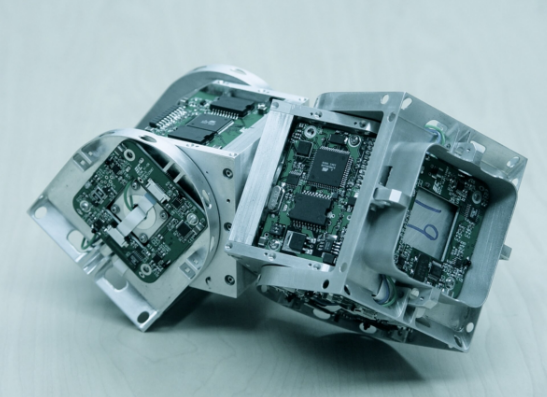
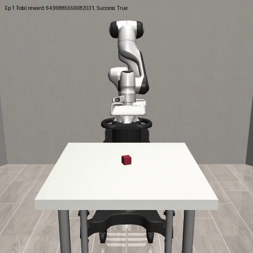
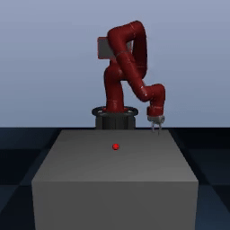
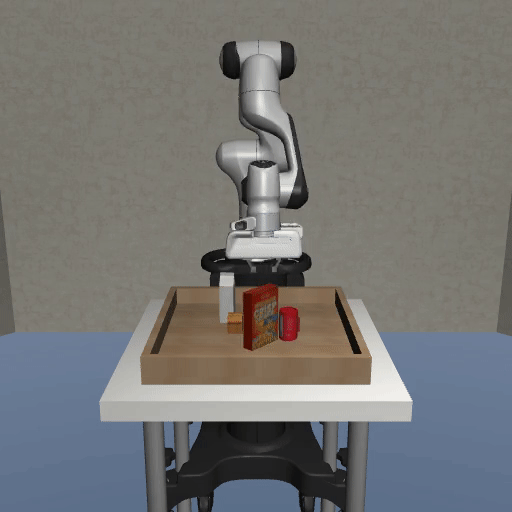
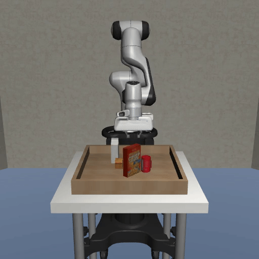

🚧 Under Construction 🚧
Charlene Yuen
About
Hi! I’m a machine learning engineer and robotics researcher. My work spans computer vision, robotics, and physics-informed ML, with current research in quadruped manipulation and self-reconfigurable robots.
Research
Quadrupedal Dynamic Manipulation
Working on sim-to-real for dynamic manipulation on quadrupeds for a novel task.
Self-Reconfigurable Robots (Information Sciences Institute)
Investigating modular robot morphologies for adaptability.
Quadruped Locomotion and Control
Investigated quadruped legged manipulation capabilities via MPC and RL methods.

Generative Curriculum for Robotic Manipulation
Worked on an autonomatic framework to create progressively harder training scenarios (in the form of more geometrically complex objects) for robotic grasping and more efficient skill acquisition.
  

Work Experience
Applied Research Associates Inc.
Staff Machine Learning Engineer
June 2023 - Present
Education
MS in CS (AI)
University of Southern California
August 2022 - December 2024
BS in EECS
University of California, Berkeley
August 2020 - August 2022
Publications
Demonstration of Metrics for Self-Healing and Self-Reconfiguration in a Monolithic and Segmented Robotic System
Jaxson Hill, Griffin MacRae, Pierson Lintala, Noah Taniguchi, Joshua Pastizzo, Ethan Bootehsaz, Harrison Pearl, Charlene Yuen, David Samia, Le Duong, Niccolo Von-Bueren, Tyler Rotello, Wei-Min Shen, David A. Barnhart. [Submitted] AIAA (2025)
Contact:
yuenchar@usc.edu